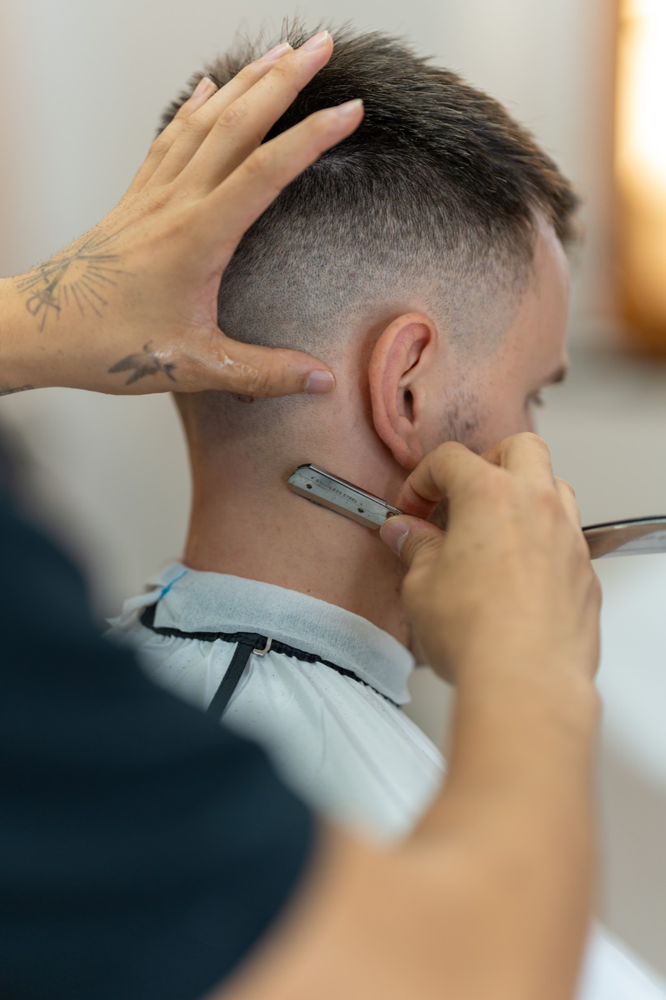

Blog
9 de octubre en Valencia: qué significa y barbería abierta en La Petxina

Horario especial 9 de octubre: La Petxina (C/ Juan Llorens 18) abierta. El Carmen (C/ Baja 50) cerrada.
El 9 de octubre es el Día de la Comunitat Valenciana (Nou d’Octubre). Conmemora la entrada del rey Jaume I en la ciudad de Valencia en 1238, un hito que marca el origen simbólico del pueblo valenciano. Es fiesta oficial en toda la Comunitat y uno de los días con más identidad en la ciudad.
Qué significa el 9 de octubre en Valencia
Más allá del día libre, el 9 d’octubre es memoria e identidad: procesión cívica con la Reial Senyera, ofrenda a Jaume I, himno, mascletà y, por la tarde, la entrada de Moros y Cristianos. También se celebra Sant Donís, con la tradición de regalar la mocadorà de mazapán. En 2026 la fiesta tiene un matiz especial por el 750 aniversario de la muerte de Jaume I.
Qué hacer en Valencia el 9 de octubre
- Mañana en el centro: sigue la Procesión Cívica desde la plaza del Ayuntamiento hacia la Catedral y la ofrenda en la estatua de Jaume I (Parterre / plaza d’Alfons el Magnànim).
- Mascletà: al terminar la procesión suele dispararse en la plaza del Ayuntamiento: pólvora, ritmo y ambiente de fiesta.
- Tarde: Entrada de Moros y Cristianos por el centro (Glorieta, calle de la Pau, plaza del Ayuntamiento…).
- Sant Donís: regala o compra una mocadorà; es el detalle dulce del día en Valencia.
- Paseo y terraza: después de los actos, aprovecha el feriado para un vermut o comida en El Carmen, Ruzafa o cerca de La Petxina.
Cortes para celebrar el 9 d’octubre
Un feriado así pide llegar impecable: fotos, familia, desfile y noche. En La Petxina te dejamos listo con looks que funcionan igual de bien en la mascletà que en la cena:
- Fade limpio + barba perfilada: el combo más pedido para lucir fresco y definido.
- Crop texturizado: moderno, fácil de peinar y con movimiento para el día completo.
- Clásico con degradado: elegante si vas a actos institucionales o comida familiar.
- Corte + arreglo de barba: el upgrade rápido para celebrar con estilo valenciano.
Consulta la carta de servicios y elige el tuyo. Los huecos del feriado vuelan: mejor reservar ya.
Reserva en La Petxina (abierta el 9 de octubre)
Este 9 de octubre solo abre La Petxina, en C/ Juan Llorens 18. El Carmen permanecerá cerrado.
Reservar corte · La Petxina (Booksy) WhatsApp
Dirección: C/ Juan Llorens 18, 46008 Valencia. Más info en la página de La Petxina.
Reserva tu corte en La Petxina (9 de octubre)
La Petxina estará abierta este feriado. El Carmen permanecerá cerrado. Reserva tu hueco en C/ Juan Llorens 18.